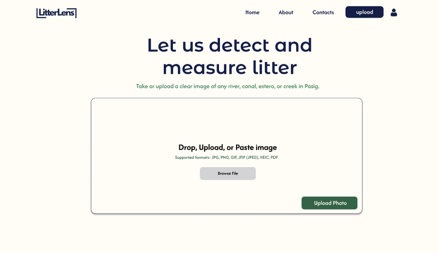
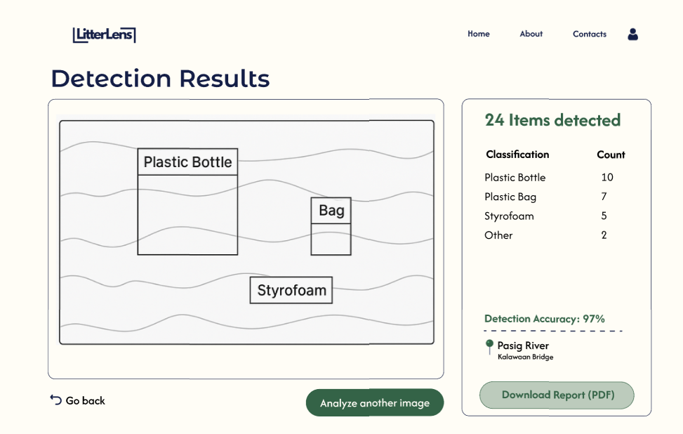

Capturing clarity, one frame at a time...
Take or upload a clear image of any river, canal, estero, or creek in Pasig.
Drop, Upload, or Paste Image
Supported formats: JPG, PNG, WEBP
Enables individuals to contribute directly to environmental monitoring by simply taking photos of waterborne waste with their smartphones.
Utilizes advanced deep learning (YOLOv8) to automatically identify and classify various types of plastic macrolitter present on the water's surface from uploaded images.
Provides quantitative data by counting detected waste items and potentially estimating their density within the captured area.
Simple steps to identify and quantify litter
Create an account or sign in to access advanced features like report downloads and image history.
Use email or Google account.
Click “Upload” and select a clear image of a waterway. Supported formats: JPG or PNG.
Once uploaded, the system uses AI to scan the image and identify macrolitter. Sit tight—processing takes just a few seconds.
View the image with detection boxes and a summary of litter types and quantities found.
Download a detailed report (PDF or CSV) containing the detection summary and image data.
If signed in, download the detailed report as a PDF for documentation.
Use reports for LGU collaboration or tracking progress.
LitterLens 2025
Have questions, feedback, or want to partner with us? Reach out—we’d love to hear from you.
You can contact us through several ways.
Choose the one more convenient for you.
You can reach us anytime
By contacting us, you agree to our Terms of Service and Privacy Policy.